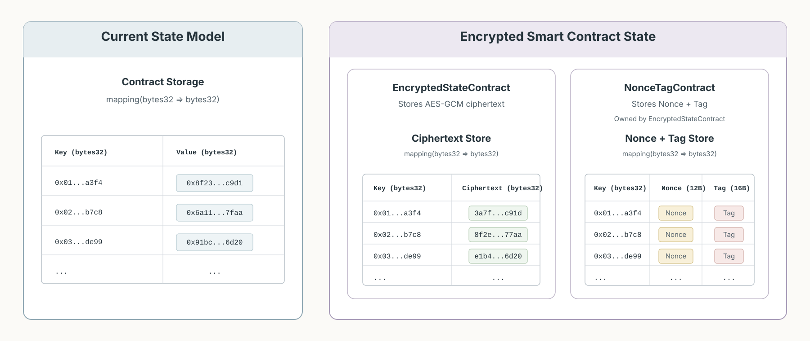

Yet another privacy solution on Ethereum
There are multiple approaches for privacy on public blockchains: 2-state commitment+nullifier model, MPC/threshold-FHE, and TEEs. Each with its own set of benefits & limitations. Here I attempt to sketch yet another privacy solution. Like others, it has limitations and some advantages. It’s limited in the sense that it does not provide as strong as privacy guarantees as 2-state commitment+nullifer model. Its advantages are that it’s compatible with the EVM state model, while providing stronger guarantees than any FHE/MPC solution, or validiums.
To start, let’s develop a mental apparatus to weigh different privacy solutions. Threshold FHE/MPC are two sides of the same coin. Both provide cryptographic guarantees under threshold assumption (i.e. the majority doesn’t collude). In some cases, FHE may fare better, trust-wise, due to its ability to scale to a relatively large committee size. Whereas, vanilla MPC becomes problematic, due to unavoidable spike in communication, as no. of parties go beyond 3-4. On the other hand, (verifiable) MPC is cheap and FHE, especially verifiable FHE, is very very expensive. Then there are TEEs that require trust in, both, the hardware manufacturer and the cloud provder. Markets have forced TEE providers to close TEE performance gap with normal servers, while, as a matter ofcourse, introducing multiple, sometimes “silly” yet, catastrophic vulnerabilities. Nonetheless, TEEs are incredibly versatile. For example, TEEs are paired with (1) FHE, for cryptographic privacy guarantees and hardware based proof of execution (2) zero-knowledge proofs, for cryptogrphic execution guarantees and hardware based privacy.
In our solution, we draw a clean separation between custody of the state and execution. The long-term state is held encrypted, under the custody of a largish set of parties and execution (i.e. state update) occurs inside an independent & stateless substrate, with different guarantees. Concretely, the state is stored encrypted under an ideal secret key (‘ideal’ means unknown). The ideal key is stored collectively, in a threshold fashion, by a set of parties. Each party stores only one, independent, shard of the key. One can decrypt a ciphertext, in the state, only when enough (i.e. >= threshold no. of) parties agree on the decryption. Execution occurs inside a TEE (or any other substrate, with better privacy guarantees: MPC, FHE), which (a) proves its authencity to the secret shard holders, (b) receives enough shards for reconstruction of the ideal secret, and (c) decrypts the state and updates it as per execution instructions.
Encrypted smart contract state & execution
EVM smart contract state is a 32-byte key-value store. We use a symmetric encryption scheme, like AES-GCM, to encrypt a smart contract’s state using an ideal AES secret key. Then we use shamir secret sharing to thresholdize the ideal secret key among the set of parties (the secret shard holders). Concretely, for every key-value slot in the state, (1) store the AES-GCM ciphertext encrypting the original value in the slot, (2) store the ciphertext’s respective nonce and the tag (both artifacts of AES-GCM encryption), concatenated (12 bytes + 16 bytes = 28 bytes < 32 bytes) under a, different, but still contract owned, NonceTagContract against the same key as the ciphertext.

State of normal contract constrasted with a smart contract with encrypted state. Smart contract with encrypted state requires a companion NonceTagContract that stores ciphertext specific nonce+tag at the same key slot.
Please excuse the overflows. The image is generated by Chatgpt and I wasn’t patient enough to get it, exactly, right.
User calls the smart contract as they would any other normal (as in, with public state) contract. However, since the storage slots of the smart contract store (AES) ciphertexts, no contract methods are executed directly. User transaction contains (1) encrypted EIP712 message and (2) signature (signature is not encrypted!). The EIP712 message defines the actual method call. All user transactions are publicly addressed to a single method, called sequence. sequence receives the encrypted message, and the signature, and appends them to a list of pending txs. Since the smart contract’s own storage is encrypted, it appears cleaner to use another “sequencer” contract, owned by the main contract, that stores pending (& processed) txs.
Every now and then, batch of sequenced (i.e. pending) txs are processed. As a preprocessing step (as in, even before users can send txs for execution), an execution environment inside an enclave is setup. Then the enclave attests itself with the smart contract and, as a consequence, to the threshold set of parties. It then communicates an enclave specific public key, of which the corresponding secret key lives inside the enclave, to the smart contract. Anyone can use the public key to communicate messages, privately, to the enclave. Users encrypt EIP712 messages using the enclave’s public key. Atleast, threshold number of parties communicate their shards of the ideal secret key, encrypted with enclave’s public key, to the enclave. Enclave reconstructs the ideal secret key from the received shards. Then uses the ideal secret to decrypt the contract’s state as required and processes the batch of pending transactions. Enclave records the updated storage slots, their respective updated ciphertexts & nonces+tags. It then sends the records to the smart contract, which then updates the storage slots with respective new values for ciphertexts & nonces+tags. Smart contract then marks the batch of txs as processed.
Above, we use TEE, in stateless fashion, for private execution and threshold set of parties for custody of the encrypted state. The combination is more resilient than using TEE alone. In particular, the setup allows to swap out a TEE, with recently discovered vulnerabilities1, with another TEE with necessary patches. Or swap TEE with MPC based private execution.
However, we’re still using TEE for the correctness guarantee (i.e. trusting that the TEE executes faithfully) and it’s objectively better to have cryptographic execution guarantees. This is where zero-knowledge proofs come into picture. The enclave also produces a zk-proof of execution and the smart contract accepts the update records, for a batch of txs, only if the proof is vaild. But, proof of execution for arbitrary computation, especially with RAM reads/writes, is expensive. Luckily, majority of the most valuable smart contract functionalities (transfers, lending, etc.) are simple functions, with only few state accesses. Thus, such functions can be expressed as pure functions where the necessary state reads are fed as inputs and writes are produced as outputs. There’s no need to prove state reads/writes because, since state values are ciphertexts, they can be set as public inputs of the function specific circuit. Then the job of correct reads/writes is offloaded to the smart contract.
Our construction has one major limitation. Since, the state values are ciphertexts, the smart contract with private state cannot be composed wth other normal contracts. Other than that, the construction is portable to all possible interpretations of smart contracts starting from a single smart contract to a smart contract platform (i.e. a blockchain). For example, one can deploy the construction for a single ERC20 token or deploy it for an entire EVM (i.e. rollup).
How we fare?
How does our construction compare with other solutions? In contrast to 2-state commitment-nullifier model, our setup works directly with the account model (i.e. is compatible with infrastructure built for EVM) while having weaker privacy guarantees (threshold + hardware, in ours, vs cryptographic). Our construction, unlike 2-state commitment-nullifier model, does not hide state addresses. However, for the latter, I believe, application specific methods can be developed to reduce information leakage due public state addresses.
Compared with FHE based privacy solutions, our solution is objectively better in terms of cost, speed, and execution guarantees. This is because, execution in FHE is at-least 100000x (one hundred thousand times) more expensive than execution inside TEE. For verifiable FHE, add 1 more zero (one million times). In terms of privacy guarantees, FHE is better since execution within the enclave happens in plaintext whereas FHE, by definition, computes on encrypted data.
Our construction is compatible with co-snarks or other MPC based methods: replace TEE with secret sharing based MPC (or co-snarks for proof of execution). Doing so provides better privacy guarantees (in practice, distributes trust across 3-4 servers) with approximately 3-5x more cost. However, the servers are usually co-located, for high bandwidth communication, due to which, the gain in guarantees, keeping in purview the high additional complexity, could be slim.
Validiums are a primitive version of our construction, since it’s easy to imagine a rollup that stores the state publicly, encrypted under the custody of a threshold set of parties. Doing so, provides better privacy guarantees compared to, validiums of today with, a single entity. However, implementation is hard. Ignoring the complexity of threshold cryptography, producing proofs of EVM execution inside a distributed system built with GPU based TEEs, with no-leakage whatsoever is, at the very least, more complex than EVM execution proofs on normal servers.
Private transfers
I started down this path because I’m interested in methods for private transfers on EVM without having to throw away existing infrastructure developed by the ecosystem, majority, if not all, of which is built on the account state model.
It’s straightforward to develop encrypted ERC20s (E-ERC20) that support transfers with encrypted amounts using our construction. This is because both the state (address => balance map) and the execution (transfer, transferFrom) methods are simple. Thus, the zk-circuits for proof of execution for the methods are light-weight as well. The heaviest pieces, as far as I can see, will be (1) the TEE (i.e. the execution environment) attesting itself to the E-ERC20 token contract, (2) threshold parties communicating their respective shards to the TEE over a private channel, (3) key-management setup per party to securely store the shard. Additional complexity will come from having to deal with key-rotations, TEE rotations necessary for any production-grade deployement. But, for now, I’ll assume that all of these complexities are taken care of.
fn transfer(
// pubilc inputs
encBalanceAIn,
encBalanceBIn,
encBalanceAOut,
encBalanceBOut,
encTransferAmtAtoB
){
// AES-GCM decryption fails if AES_Sk_Ideal is incorrect. That is,
// witness is not satisfied.
balanceAIn = AES_GCM_Dec(encBalanceAIn, AES_Sk_Ideal)
balanceBIn = AES_GCM_Dec(encBalanceBIn, AES_Sk_Ideal)
// PublicKey encryption scheme used to encrypt messages to the enclave
// is assumed to be CCA-secure. This implies that if either the
// ciphertext is malformed or Enclave_Sk is incorrect the decryption
// witness is not satisfied.
amt = CCASecPublicKeyEncDecrypt(encTransferAmtAtoB, Enclave_Sk)
assert balanceAIn > amt
assert balanceBIn + amt == balanceBOut
assert balanceAIn - amt == balanceAOut
// Encryption requires randomness. For example, AES-GCM requires
// that nonce are repeated across two distinct ciphertexts with same
// AES secret key.
//
// We derive the random seed as hash function of concatenation of all the public
// inputs. This makes r_seed unpredictable and assures same output ciphertexts
// across two distinct runs of the same public inputs.
r_seed = Keccak(
encBalanceAIn ||
encBalanceBIn ||
encBalanceAOut ||
encBalanceBOut ||
encTransferAmtAtoB
)
assert encBalanceAOut == AES_GCM_Enc(balanceAOut, AES_Sk_Ideal, Keccak(r_seed | 1))
assert encBalanceBOut == AES_GCM_Enc(balanceBOut, AES_Sk_Ideal, Keccak(r_seed | 2))
}
Pseudo-code for zk-proof circuit of the transfer function. The public inputs are in-state balance ciphertexts (encBalanceAIn, encBalanceBIn), post-transfer new balance ciphertexts (encBalanceAOut, encBalanceBOut), encrypted transfer amount (encTransferAmtAtoB). Note that in the circuit any variable that denotes an encrypted value contains both the ciphertext and corresponding metadata (i.e. nonce + tag in case of AES-GCM), although the ciphertext & nonce+tag are stored separately in the smart contract state.
Unliking sender-receiver with noise
However, transfers in encrypted ERC20s are not completely private since, given that state addresses are public, the receiver’s address is linked with the sender’s address. There’s no way to unlink receiver from the sender without moving to 2-state commitment and nullifier model2. Therefore, the best we can do is to add noise.
We define a router contract, that acts like a mixer. Router is a special smart contract, operated by an external party, that batch routes all collected incoming transactions to outgoing transactions. Sender sends their E-USDX (i.e. Encrypted USDX token) transfer to the router contract, along with the encryption of the receiver’s address, encrypted to the router operator’s public key. Router operator, decrypts to learn the receiver’s address and routes the transaction to the receiver. If E-USDX is used often, say it processes 10,000 txs per second, then batch routing should provide sufficient noise to prevent any receiver to be linked with the original sender. However, 10,000 txs per second is a high bar.
We get around this by adding many worthless noise transactions per batch. Say that the router processes a batch of size 10,000 txs every second whereas E-USDX only processes 1 real tx per second. We introduce additional 9999 fake transactions that transfer 0 E-USDX from a random sender to a random receiver. Since, in E-USDX transfer amounts are always encrypted and encryption of 0 is indistinguishable from encryption of any other - real - amount, real transactions remain indistinguishable from fake transactions. Publicly, a sender is linked with the receiver only upto the batch size and, needless to say, the higher the batch size the greater the privacy.
However, if sender A transfers frequently to sender B and E-USDX processes 1 real transactions per second, then, given fake transactions are from-to random addresses, A can be linked with B across two different batches. This is because only A-B will remain consistent in multitude of random addresses.
Batch 1:
Senders = x x x x x A x x x x .... x x x x x
Receivers = x x x x x x x x x x .... x x x B x
Batch 2:
Senders = x A x x x x x x x x .... x x x x x
Receivers = x x x x x x x B x x .... x x x x x
x are random addresses. A & B are consistent across the two batches when E-USDX processes only 1 real transaction per second.
To avoid this, we can assign a noise count, say 10,000, per real transaction within any batch. If the batch contains only 1 real tx from A to B, then random addresses are derived deterministically from addresses A+B. This assures that the link between A & B always remains hidden within the set of the noise count. If there are more than 1 real transactions in a batch, then the set of random addresses can be an aggregate of the subsets, chosen at random, from noise address set of each sender-receiver pair. Link between recurrent sender, receiver pair can additionally be masked by including addresses from the noise set of the pair in batches that do not contain a real transaction between the pair.
Adding noise does not necessarily need to be handled by the router. In fact, it seems better to offload noise to senders themselves, given that they will know better about their transaction patterns and privacy preferences. 3rd party tools can easily be developed that automate adding “noise” to user’s transactions as per user’s privacy preference.
The router operator, since it cannot route without decrypting & learning the receiver’s address, learns the link between each sender and the receiver. Thus, the operator is trusted to keep the links private. However, the operator is autonomous and can be a TEE that self-attests to the router smart contract of correctness & no-leakage, to the extent possible. On the other hand, the operator does not require to have the custody over user funds, at any point in time, to process a batch. When processing a batch, it can simply produce a zero knowledge proof that accounting of incoming and outgoing transactions checks out and recipients of outgoing transaction receive exact amounts as specified in the incoming transactions.
Read encrypted balances
In a normal ERC20 token contract, user can read their balance with balanceOf
call. But how does a user learn its balance, in an ERC20 token contract with encrypted state? Of course, a function like balanceOf will still return something (ciphertext encrypting the balance of the user). But that something is gibberish to the user.
Here’s one method that I find the most straightforward, in the sense that it’s not a big departure from the current practice of retrieving state values using view method calls. We introduce additional “view-oracles”. View oracles are TEE boxes that have (a) attested themselves to the smart contract, like the TEE used for execution, such that the threshold set of parties deem it suitable to communicate to it their respective secret shards (b) execute only the solidity methods marked as view (view methods in solidity are only allowed to read state; no updates are allowed).
contract EncryptedERC20 {
...
bytes32 private constant BALANCE_VIEW_TYPEHASH =
keccak256(
"BalanceView(address account,bytes32 responseKeyHash,address contractAddress,uint256 chainId)"
);
function balanceOf(
address account,
// IMPORTANT:
// In ordinary Solidity this would be public calldata.
// In our case, this is a confidential input delivered privately
// to the TEE.
bytes32 responseAesGcmKey,
bytes calldata ownerSignature
)
external
view
returns (bytes memory)
{
// --------------- Authorization -----------------
// the elaborate set of methods below is a more
// secure way of checking that, indeed, the
// owner of the account address wants to
// be sent their account balance encrypted using
// the `responseAesGcmKey`
bytes32 responseKeyHash = keccak(responseAesGcmKey);
bytes32 structHash = keccak256(
abi.encode(
BALANCE_VIEW_TYPEHASH,
account,
responseKeyHash,
address(this),
block.chainid
)
);
// proper EIP-712 signable/verifiable digest
bytes32 digest = _hashTypedDataV4(structHash);
address signer = ECDSA.recover(digest, ownerSignature);
require(signer == account, "invalid owner signature");
// -----------------------------------------------
// --------- Encrypted balance retrieval ---------
// 1. Retrieve AES-GCM balance ciphertext
bytes32 encryptedBalanceCiphertext = _encryptedBalances[account];
// 2. Retrieve corresponding AES-GCM nonce and tag from NonceTagContract.
(bytes12 stateNonce, bytes16 stateTag) =
nonceTagContract.getNonceTagForAccount(account);
// AAD (=additional authenticated data) used for the encrypted state itself.
// This must match the AAD used when the balance was originally encrypted.
bytes memory stateAAD = abi.encode(
"ERC20_BALANCE_STATA_V1",
address(this),
block.chainid,
account,
);
// 3. Decrypt AES-GCM ciphertext inside the confidential runtime.
//
// `encryptedRuntime.decryptAESGCMUint256` is an external call outside
// of the EVM. This call runs in an environment with reconstructed
// ideal AES-GCM secret key that is used in the decryption procedure.
uint256 balancePlaintext = encryptedRuntime.decryptAESGCMUint256(
encryptedBalanceCiphertext,
stateNonce,
stateTag,
stateAAD
);
// -----------------------------------------------
// --------- Re-encrypt & return balance ---------
// encrypt account's balancePlaintext under
// owner attested `ephemeralPublicKey`
// 1. AAD used for encrypting the response to the owner.
bytes memory outputAAD = abi.encode(
"ERC20_BALANCE_VIEW_V1",
address(this),
block.chainid,
account,
responseKeyHash
);
// 2. encrypt & return to the owner their balance encrypted using
// supplied `responseAesGcmKey`.
//
// `encryptedRuntime.encryptAESGCMUint256` makes a call outside
// the EVM to sample `nonce` at random.
return encryptedRuntime.encryptAESGCMUint256(
balancePlaintext,
responseAesGcmKey,
outputAAD
);
}
...
}
Above is a rough sketch of balanceOf view method in an encrypted ERC20 token. Although, the method body looks really heavy compared with the simple balanceOf view method of a normal ERC20 token (which only requires the single line return _balances[account];), the logic is straightforward:
- user communicates the inputs of the
balanceOfmethod (account,responseAesGcmKey, andownerSignature) privately to the view-oracle TEE box. - TEE box executes the
balanceOfmethod on the inputs. The method:- validates that the
responseAesGcmKeyindeed comes from the user that owns theaccountby validatingownerSignatureagainst theaccountaddress. - decrypts
account’s AES balance ciphertext using the ideal AES secret key. - re-encrypts the
account’s balance plaintext (obtained in (2)) back to the user usingresponseAesGcmKey. And that’s it! Blame the heaviness of the function on the un-avoidable burden of ‘secure implementation’.
- validates that the
Now, the users making private queries to the view-oracle TEE box to retrieve their encrypted ERC20 token balances seems acceptable. But how does a user know that they are not being cheated upon? In the case of execution we solved it, quite trivially, by claiming that the execution TEE produces a zk-proof of execution. Ofcourse, the same can be done here. The TEE sends a proof to the user that it executed the balanceOf method correctly. But, does this scale? Users make a lot more queries to view their balances than send transactions. Proof per transaction is acceptable, but proof per request sounds like signing up for a disaster.
There are two paths forward: (a) have multiple view-oracle TEE boxes. User sends query to all and only accepts the responses if all (or majority) match. (b) we somehow nail down a proof method that is as cheap as a few hashes or group operations. The latter is yet to be figured out.
-
however if the discovered vulnerability is exploited, then we’re doomed! ↩︎
-
as all of us are aware, the best solution - with perfect theoretical cryptographic guarantees - for private state (consequently private transfers with both amount + address hiden) today is 2-state commitment nullifier model. Which, quite ironically, is incompatible with the account model and asks us to start from scratch. ↩︎